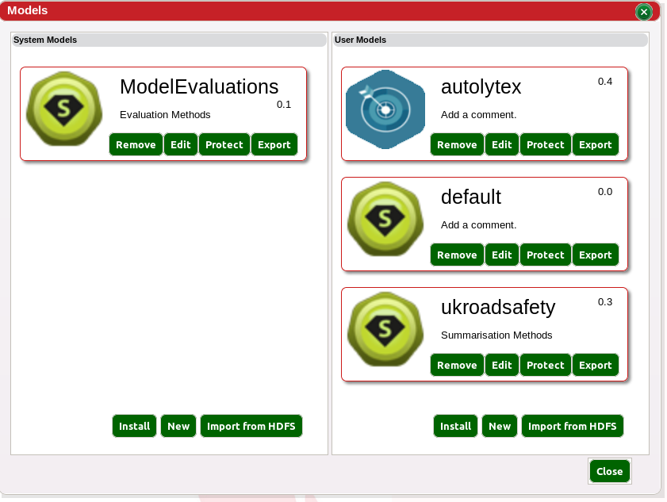
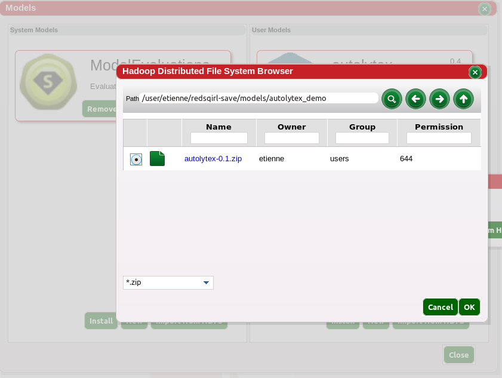

Models
The model view gathers all the models installed on the user's Red Sqirl instance.
Models are data process blocks built from Red Sqirl packages. A model can produce a prediction, a report or an analysis. A model is composed of Super Actions that depend on each other.

Scope
- System: The system scope is available to all the users.
- User: The user scope allow the installation of extra personal
functionality.
The User scope models always overwrite the System models in case of conflict. For example, if churn_model with a Super Action evaluation is installed on the System scope model and the user has installed Version 2 on the User scope model that does not have the Super Action evaluation, the user won't be able to access the Super Action evaluation.
Installation
System models can only be installed by an administrator. The user needs to be in the required
setting to be able to install models. New models can be installed either from the the Analytics Store or from HDFS.
Analytics Store
The user can only access the Analytics Store provided the web server can access the store.
- Click Install either in the System scope column or User Scope
column
- Sign In with web credentials, if the user does not have an account, one can be created on the spot.
- Identify the package to be installed.
- Click install
From HDFS
A model is a simple zip file that should have a name
$name-$version.zip
- Click import either in the System scope column or User Scope
column
- Choose the HDFS path in which your model exist
- Click OK

Model Privileges
Three permissions exists for a model:
- no privilege: Anyone can view and modify the source
- run only: The version installed is neither viewable or editable
- licensed: Same as above, but enforces the installation through the web
Run and edit privileges can be set when the user exports the model to HDFS. When the user does so, it is highly recommended to keep the original as a copy, as it can not modified.
Model Manipulation
Models can be modified provided they do not have any permissions assigned to them.
- Create: Create a new model by clicking on the new button
- Protected: Protect a model so it can not be modified
- Remove: Remove a model. Once a model is removed, it can not be undone.
- Export: Export the model to HDFS in a given folder i.e $model-$version.zip
- In the edit window the user can:
- Set an image: you can give an image to your model by clicking
the right next to it. The image has to be gif, square and between 40x40 and 75x75. By signing out and back in can solve the problem of browser caching.
- Rename: Rename a model by clicking the right next to its
name.
- Change Version: Change the version by clicking the right
next to the current version.
- Comment: Comments can be added to guide future users about the model.
- Copy/Move: Comments can be added to guide future users about the model.
- Set to public/private: The user can define public interfaces. Only public interfaces can be added to the footer.
- Remove: Remove a Super Action from a model, this action cannot be undone.